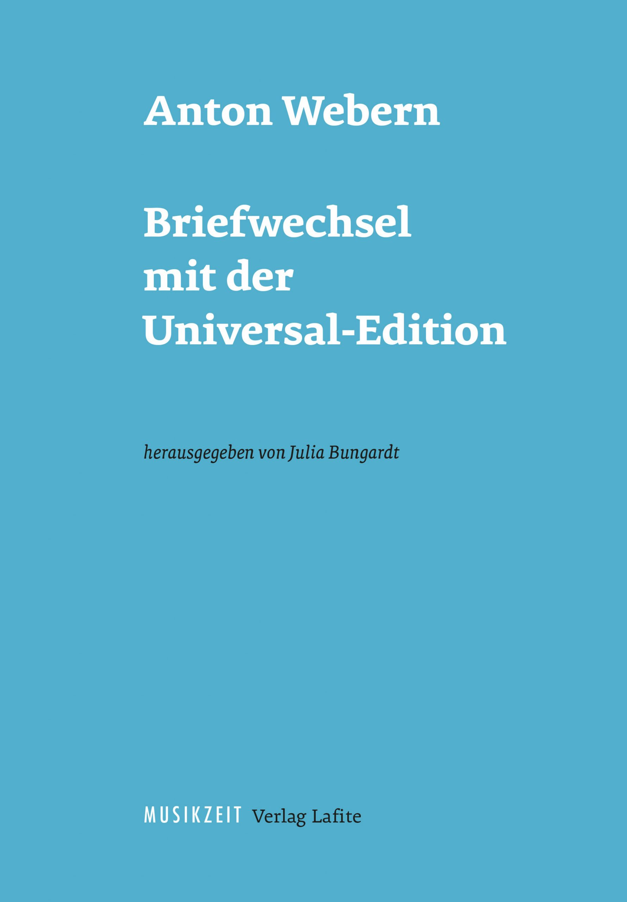
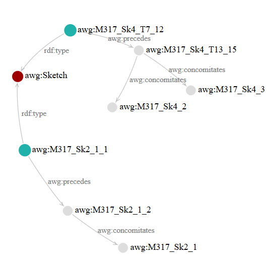
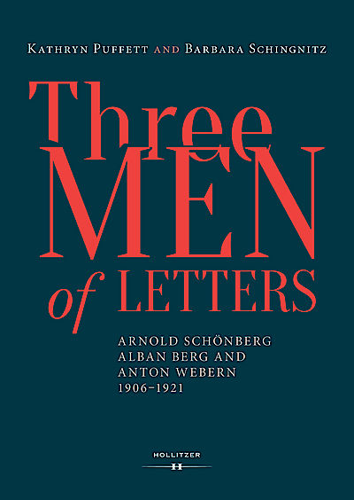
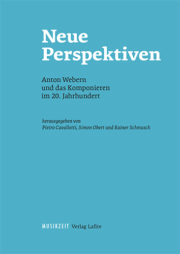

September 2020
Webern-Studien
5 erschienen:

Anton Webern,
Briefwechsel mit der
Universal-Edition, hg. von Julia Bungardt, Wien: Lafite, 2020 (Webern-Studien
5).
April 2020
Update des AWG-Editions-Prototyps mit dynamischer
Graph-Visualisierung der Skizzen zu op. 25/I.

März 2020
Neu erschienen:

Kathryn
Puffett and Barbara Schingnitz,
Three Men of Letters. Arnold Schönberg, Alban Berg and Anton Webern,
1906–1921, Wien: Hollitzer Verlag, 2020.
März
2019
Webern-Studien 4
erschienen:

Neue Perspektiven. Anton Webern und das
Komponieren im 20. Jahrhundert, hg. von Pietro Cavallotti, Simon Obert und Rainer Schmusch,
Wien: Lafite, 2019 (Webern-Studien 4).
Dezember 2018Neuer Beitrag
erschienen: Thomas Ahrend, Michael Matter: "Webern, Anton" (u. a. mit Werkverzeichnis und
Bibliographie), in: KDG - Komponisten der Gegenwart, 2018. Online unter
Munzinger Online.
3.
Dezember 2018Happy Birthday, Webern! Heute
vor 135 Jahren, ebenfalls ein
Montag, wird Anton Webern in
Wien, III. Bezirk, Löwengasse 53a, „durch
eine Hebamme entbunden“.
November 2018
Simone Hohmaier wird am 27. November 2018 den nächsten Anton Webern Vortrag zum Thema "Die Korrespondenz zwischen Anton Webern und Alban Berg – Dokument einer wundersamen Freundschaft" halten (18.15 Uhr, Vortragssaal des Musikwissenschaftlichen Seminars, Basel).

Weitere
Informationen
hier.
Oktober
2018
Gefunden! Programmzettel von Weberns erstem Konzert
als „Vereinschormeister“ des Mödlinger Männer-Gesang-Vereins am 25. November 1921:

Die Quelle wurde im
Archiv des Männer-Gesang-Vereins (heute: Chor Kontroverse) entdeckt, von seinem aktuellen Leiter Andreas
Brüger.
März 2018Neuer Online-Beitrag erschienen: Thomas Ahrend, Stefan
Münnich: "
Anton Webern", in:
Oxford Bibliographies in Music (28.3.2018). DOI:
10.1093/obo/9780199757824-0238.
September
2017Mit über 2000 Einträgen hat die Anton Webern Gesamtausgabe die weltweit größte
Webern-Bibliographie
zusammengestellt. Sie bietet damit einen umfassenden Überblick über die internationale wissenschaftliche
Beschäftigung mit Anton Webern von 1907 bis 2017.

Dezember 2016
Konzertprogramm vom 8.
Februar 1910 in den Karl Weigl Papers der Yale University gefunden:

Mai 2016
Webern-Studien 3 erschienen:
 Webern-Philologien
Webern-Philologien,
hg. von Thomas Ahrend und Matthias Schmidt, Wien: Lafite, 2016 (Webern-Studien 3).
Januar
2016
Musiktheorie-Heft zu Webern und
Segantini:

Anton Webern und Giovanni Segantini,
hg. von Thomas Ahrend und Matthias Schmidt, Laaber: Laaber, 2015 (Musiktheorie 30/4).